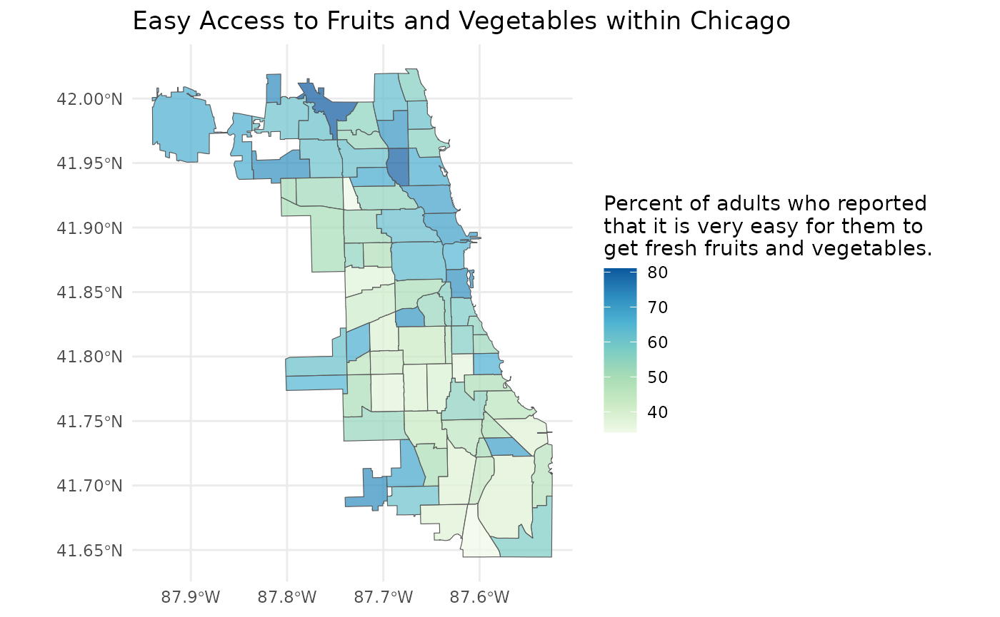
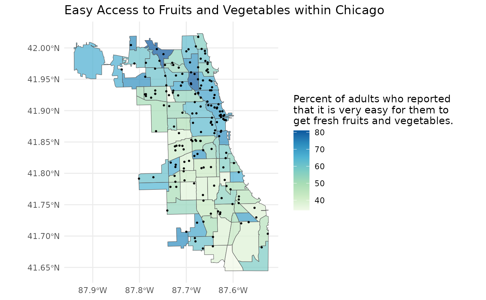

Discover indicators
Let’s set our health atlas. For this example we will use the Chicago
Health Atlas. We can do so by calling ha_set() with the
Chicago Health Atlas URL.
ha_set("chicagohealthatlas.org")If we need to check which health atlas we are using, we can use
ha_get().
ha_get()
#> [1] "https://chicagohealthatlas.org/api/v1/"We can list all the topics (aka indicators) present within Chicago
Health Atlas by using ha_topics(). The most important
column here is the topic_key. An individual
topic_key can be used to identify a topic within subsequent
functions.
topics <- ha_topics(progress = FALSE)
topics
#> # A tibble: 411 × 7
#> topic_name topic_key topic_description topic_units topic_keywords
#> <chr> <chr> <chr> <chr> <list>
#> 1 9th grade education r… EDA Residents 25 or … % of resid… <chr [2]>
#> 2 ACA marketplace enrol… ENR Number of plan s… plan selec… <chr [5]>
#> 3 Accidents mortality VRAC Number of people… count of d… <chr [2]>
#> 4 Accidents mortality r… VRACR Age-adjusted rat… per 100,00… <chr [2]>
#> 5 Active business licen… CHANVYI Count of active … licenses p… <chr [1]>
#> 6 Adult asthma HCSATH Number of adults… count of a… <chr [2]>
#> 7 Adult asthma rate HCSATHP Percent of adult… % of adults <chr [2]>
#> 8 Adult binge drinking HCSBD Number of adults… count of a… <chr [1]>
#> 9 Adult binge drinking … HCSBDP Percent of adult… % of adults <chr [1]>
#> 10 Adult diabetes HCSDIA Number of adults… count of a… <chr [1]>
#> # ℹ 401 more rows
#> # ℹ 2 more variables: topic_datasets <list>, topic_subcategories <list>Note: topics can be derived from multiple datasets
or belong to multiple subcategories or keywords. Therefore, these
columns may be composed of tibbles or vectors. Filtering
topics via these pieces of information is still quite easy using
purrr::map_lgl().
library(dplyr)
library(purrr)
# filter by dataset
topics %>%
filter(map_lgl(topic_datasets, ~ "healthy-chicago-survey" %in% .x$key))
#> # A tibble: 74 × 7
#> topic_name topic_key topic_description topic_units topic_keywords
#> <chr> <chr> <chr> <chr> <list>
#> 1 Adult asthma HCSATH "Number of adult… count of a… <chr [2]>
#> 2 Adult asthma rate HCSATHP "Percent of adul… % of adults <chr [2]>
#> 3 Adult binge drinking HCSBD "Number of adult… count of a… <chr [1]>
#> 4 Adult binge drinking … HCSBDP "Percent of adul… % of adults <chr [1]>
#> 5 Adult diabetes HCSDIA "Number of adult… count of a… <chr [1]>
#> 6 Adult diabetes rate HCSDIAP "Percent of adul… % of adults <chr [1]>
#> 7 Adult e-cigarette use HCSEC "Number of adult… count of a… <chr [2]>
#> 8 Adult e-cigarette use… HCSECP "Percent of adul… % of adults <chr [2]>
#> 9 Adult flu vaccination HCSFLU "Number of adult… count of a… <chr [2]>
#> 10 Adult flu vaccination… HCSFLUP "Percent of adul… % of adults <chr [2]>
#> # ℹ 64 more rows
#> # ℹ 2 more variables: topic_datasets <list>, topic_subcategories <list>
# filter by subcategory
topics %>%
filter(map_lgl(topic_subcategories, ~ "diet-exercise" %in% .x$key))
#> # A tibble: 20 × 7
#> topic_name topic_key topic_description topic_units topic_keywords
#> <chr> <chr> <chr> <chr> <list>
#> 1 Adult fruit and veget… HCSFV "Number of adult… count of a… <chr [2]>
#> 2 Adult fruit and veget… HCSFVP "Percent of adul… % of adults <chr [2]>
#> 3 Adult physical inacti… HCSPA "Number of adult… count of a… <chr [2]>
#> 4 Adult physical inacti… HCSPAP "Percent of adul… % of adults <chr [2]>
#> 5 Adult soda consumption HCSS "Number of adult… count of a… <chr [1]>
#> 6 Adult soda consumptio… HCSSP "Percent of adul… % of adults <chr [1]>
#> 7 Easy access to fruits… HCSFVA "Number of adult… count of a… <chr [2]>
#> 8 Easy access to fruits… HCSFVAP "Percent of adul… % of adults <chr [2]>
#> 9 High School fruit and… YRFV "Number of Chica… count of s… <chr [2]>
#> 10 High School fruit and… YRFVP "Percent of Chic… % of stude… <chr [2]>
#> 11 High School physical … YRPA "Number of Chica… count of s… <chr [1]>
#> 12 High School physical … YRPAP "Percent of Chic… % of stude… <chr [1]>
#> 13 High School physical … YRPI "Number of Chica… count of s… <chr [3]>
#> 14 High School physical … YRPIP "Percent of Chic… % of stude… <chr [3]>
#> 15 High School soda cons… YRSO "Number of Chica… count of s… <chr [1]>
#> 16 High School soda cons… YRSOP "Percent of Chic… % of stude… <chr [1]>
#> 17 Middle School physica… YRMPA "Number of Chica… count of s… <chr [1]>
#> 18 Middle School physica… YRMPAP "Percent of Chic… % of stude… <chr [1]>
#> 19 Middle School physica… YRMPI "Number of Chica… count of s… <chr [3]>
#> 20 Middle School physica… YRMPIP "Percent of Chic… % of stude… <chr [3]>
#> # ℹ 2 more variables: topic_datasets <list>, topic_subcategories <list>
# filter by keyword
topics %>%
filter(map_lgl(topic_keywords, ~ "activity" %in% .x))
#> # A tibble: 6 × 7
#> topic_name topic_key topic_description topic_units topic_keywords
#> <chr> <chr> <chr> <chr> <list>
#> 1 Adult physical inactiv… HCSPA Number of adults… count of a… <chr [2]>
#> 2 Adult physical inactiv… HCSPAP Percent of adult… % of adults <chr [2]>
#> 3 High School physical i… YRPI Number of Chicag… count of s… <chr [3]>
#> 4 High School physical i… YRPIP Percent of Chica… % of stude… <chr [3]>
#> 5 Middle School physical… YRMPI Number of Chicag… count of s… <chr [3]>
#> 6 Middle School physical… YRMPIP Percent of Chica… % of stude… <chr [3]>
#> # ℹ 2 more variables: topic_datasets <list>, topic_subcategories <list>There may be a specific topic area you are interested in exploring.
You can explore these topic areas using
ha_subcategories().
subcategories <- ha_subcategories()
subcategories
#> # A tibble: 30 × 3
#> subcategory_name subcategory_key category_name
#> <chr> <chr> <chr>
#> 1 Access to Care access-to-care Clinical Care
#> 2 Quality of Care quality-of-care Clinical Care
#> 3 Community Safety community-safety-1 Physical Environment
#> 4 Housing & Transit housing-transit Physical Environment
#> 5 Pollution pollution Physical Environment
#> 6 Resource Availability resource-availability Physical Environment
#> 7 Behavioral Health behavioral-health Morbidity
#> 8 Chronic Disease chronic-disease-1 Morbidity
#> 9 Infectious Disease infectious-disease-1 Morbidity
#> 10 Injury & Violence injury-violence-1 Morbidity
#> # ℹ 20 more rowsYou can use a subcategory_key to subset the list of
topics.
ha_topics("diet-exercise")
#> # A tibble: 20 × 7
#> topic_name topic_key topic_description topic_units topic_keywords
#> <chr> <chr> <chr> <chr> <list>
#> 1 Adult fruit and veget… HCSFV "Number of adult… count of a… <chr [2]>
#> 2 Adult fruit and veget… HCSFVP "Percent of adul… % of adults <chr [2]>
#> 3 Adult physical inacti… HCSPA "Number of adult… count of a… <chr [2]>
#> 4 Adult physical inacti… HCSPAP "Percent of adul… % of adults <chr [2]>
#> 5 Adult soda consumption HCSS "Number of adult… count of a… <chr [1]>
#> 6 Adult soda consumptio… HCSSP "Percent of adul… % of adults <chr [1]>
#> 7 Easy access to fruits… HCSFVA "Number of adult… count of a… <chr [2]>
#> 8 Easy access to fruits… HCSFVAP "Percent of adul… % of adults <chr [2]>
#> 9 High School fruit and… YRFV "Number of Chica… count of s… <chr [2]>
#> 10 High School fruit and… YRFVP "Percent of Chic… % of stude… <chr [2]>
#> 11 High School physical … YRPA "Number of Chica… count of s… <chr [1]>
#> 12 High School physical … YRPAP "Percent of Chic… % of stude… <chr [1]>
#> 13 High School physical … YRPI "Number of Chica… count of s… <chr [3]>
#> 14 High School physical … YRPIP "Percent of Chic… % of stude… <chr [3]>
#> 15 High School soda cons… YRSO "Number of Chica… count of s… <chr [1]>
#> 16 High School soda cons… YRSOP "Percent of Chic… % of stude… <chr [1]>
#> 17 Middle School physica… YRMPA "Number of Chica… count of s… <chr [1]>
#> 18 Middle School physica… YRMPAP "Percent of Chic… % of stude… <chr [1]>
#> 19 Middle School physica… YRMPI "Number of Chica… count of s… <chr [3]>
#> 20 Middle School physica… YRMPIP "Percent of Chic… % of stude… <chr [3]>
#> # ℹ 2 more variables: topic_datasets <list>, topic_subcategories <list>Once we have a topic or topics in mind, we can explore what
populations, time periods, and geographic scales that data is available
at by using ha_coverage(). Again, the most important
columns here are the key columns which can be used to specify the data
desired.
coverage <- ha_coverage("HCSFVAP", progress = FALSE)
coverage
#> # A tibble: 187 × 7
#> topic_key population_key population_name population_grouping period_key
#> <chr> <chr> <chr> <chr> <chr>
#> 1 HCSFVAP "" Full population "" 2020-2021
#> 2 HCSFVAP "" Full population "" 2023-2024
#> 3 HCSFVAP "" Full population "" 2021-2022
#> 4 HCSFVAP "" Full population "" 2016-2018
#> 5 HCSFVAP "" Full population "" 2015-2017
#> 6 HCSFVAP "" Full population "" 2022-2023
#> 7 HCSFVAP "" Full population "" 2014-2016
#> 8 HCSFVAP "" Full population "" 2023-2024
#> 9 HCSFVAP "" Full population "" 2024
#> 10 HCSFVAP "" Full population "" 2022-2023
#> # ℹ 177 more rows
#> # ℹ 2 more variables: layer_key <chr>, layer_name <chr>Import tabular data
Now, we can import our data using ha_data() and
specifying the keys we identified above.
ease_of_access <- ha_data(
topic_key = "HCSFVAP",
population_key = "",
period_key = "2022-2023",
layer_key = "neighborhood"
)
ease_of_access
#> # A tibble: 77 × 7
#> geoid topic_key population_key period_key layer_key value standardError
#> <chr> <chr> <chr> <chr> <chr> <dbl> <dbl>
#> 1 1714000-14 HCSFVAP "" 2022-2023 neighborh… 53.0 6.18
#> 2 1714000-18 HCSFVAP "" 2022-2023 neighborh… 51.0 9.56
#> 3 1714000-2 HCSFVAP "" 2022-2023 neighborh… 62.7 5.51
#> 4 1714000-43 HCSFVAP "" 2022-2023 neighborh… 46.0 6.48
#> 5 1714000-45 HCSFVAP "" 2022-2023 neighborh… 48.8 10.6
#> 6 1714000-47 HCSFVAP "" 2022-2023 neighborh… 50.4 8.55
#> 7 1714000-52 HCSFVAP "" 2022-2023 neighborh… 46.5 7.04
#> 8 1714000-6 HCSFVAP "" 2022-2023 neighborh… 66.6 2.70
#> 9 1714000-49 HCSFVAP "" 2022-2023 neighborh… 38.1 7.78
#> 10 1714000-24 HCSFVAP "" 2022-2023 neighborh… 62.3 4.19
#> # ℹ 67 more rowsWe can even specify multiple topics, populations, and periods to get
data for. ha_data() will return a combined table with data
for every combination of topic, population, and period requested. A
warning will be given for every invalid combindation of topic,
population, and period requested.
combinations_of_data <- ha_data(
topic_key = c("POP", "UMP"),
population_key = c("", "H"),
period_key = c("2017-2021", "2018-2022", "invalid"),
layer_key = "neighborhood"
)
#> Warning: Your API call has errors. No results for topic_key = "POP"
#> population_key = "" period_key = "invalid" layer_key = "neighborhood".
#> Warning: Your API call has errors. No results for topic_key = "UMP"
#> population_key = "" period_key = "invalid" layer_key = "neighborhood".
#> Warning: Your API call has errors. No results for topic_key = "POP"
#> population_key = "H" period_key = "invalid" layer_key = "neighborhood".
#> Warning: Your API call has errors. No results for topic_key = "UMP"
#> population_key = "H" period_key = "invalid" layer_key = "neighborhood".
combinations_of_data
#> # A tibble: 616 × 7
#> geoid topic_key population_key period_key layer_key value standardError
#> <chr> <chr> <chr> <chr> <chr> <dbl> <dbl>
#> 1 1714000-14 UMP "" 2017-2021 neighborh… 6.67 1.46
#> 2 1714000-18 UMP "" 2017-2021 neighborh… 5.36 2.10
#> 3 1714000-2 UMP "" 2017-2021 neighborh… 6.66 1.11
#> 4 1714000-43 UMP "" 2017-2021 neighborh… 17.0 1.95
#> 5 1714000-45 UMP "" 2017-2021 neighborh… 13.5 5.24
#> 6 1714000-47 UMP "" 2017-2021 neighborh… 21.5 8.32
#> 7 1714000-52 UMP "" 2017-2021 neighborh… 8.02 1.69
#> 8 1714000-6 UMP "" 2017-2021 neighborh… 3.86 0.580
#> 9 1714000-49 UMP "" 2017-2021 neighborh… 18.7 2.10
#> 10 1714000-24 UMP "" 2017-2021 neighborh… 3.50 0.608
#> # ℹ 606 more rowsIf you want to mix and match topics, populations, years, or layers of
data, I recommend creating a table of all the datasets you want, and
purrr::pmap()-ing over the table.
library(tibble)
library(purrr)
# creating a table of data I want
metadata <- tribble(
~topic_key,
~population_key,
~period_key,
~layer_key,
"POP",
"",
"2017-2021",
"neighborhood",
"HCSFVAP",
"",
"2020-2021",
"neighborhood",
"UMP",
"H",
"2017-2021",
"neighborhood",
)
metadata %>%
pmap(ha_data)
#> [[1]]
#> # A tibble: 77 × 7
#> geoid topic_key population_key period_key layer_key value standardError
#> <chr> <chr> <chr> <chr> <chr> <dbl> <lgl>
#> 1 1714000-35 POP "" 2017-2021 neighbor… 21276. NA
#> 2 1714000-36 POP "" 2017-2021 neighbor… 7417. NA
#> 3 1714000-37 POP "" 2017-2021 neighbor… 2280. NA
#> 4 1714000-38 POP "" 2017-2021 neighbor… 24397. NA
#> 5 1714000-39 POP "" 2017-2021 neighbor… 18503. NA
#> 6 1714000-4 POP "" 2017-2021 neighbor… 42252. NA
#> 7 1714000-40 POP "" 2017-2021 neighbor… 11608. NA
#> 8 1714000-41 POP "" 2017-2021 neighbor… 28802. NA
#> 9 1714000-42 POP "" 2017-2021 neighbor… 24362. NA
#> 10 1714000-1 POP "" 2017-2021 neighbor… 55627. NA
#> # ℹ 67 more rows
#>
#> [[2]]
#> # A tibble: 77 × 7
#> geoid topic_key population_key period_key layer_key value standardError
#> <chr> <chr> <chr> <chr> <chr> <dbl> <dbl>
#> 1 1714000-14 HCSFVAP "" 2020-2021 neighborh… 59.6 7.18
#> 2 1714000-18 HCSFVAP "" 2020-2021 neighborh… 46.3 9.32
#> 3 1714000-2 HCSFVAP "" 2020-2021 neighborh… 61.8 5.95
#> 4 1714000-43 HCSFVAP "" 2020-2021 neighborh… 58.5 6.90
#> 5 1714000-45 HCSFVAP "" 2020-2021 neighborh… 55.7 10.4
#> 6 1714000-47 HCSFVAP "" 2020-2021 neighborh… 19.0 7.30
#> 7 1714000-52 HCSFVAP "" 2020-2021 neighborh… 49.0 11.8
#> 8 1714000-6 HCSFVAP "" 2020-2021 neighborh… 77.5 2.31
#> 9 1714000-49 HCSFVAP "" 2020-2021 neighborh… 54.9 7.55
#> 10 1714000-24 HCSFVAP "" 2020-2021 neighborh… 76.1 3.17
#> # ℹ 67 more rows
#>
#> [[3]]
#> # A tibble: 77 × 7
#> geoid topic_key population_key period_key layer_key value standardError
#> <chr> <chr> <chr> <chr> <chr> <dbl> <dbl>
#> 1 1714000-… UMP H 2017-2021 neighbor… 20.2 22.8
#> 2 1714000-… UMP H 2017-2021 neighbor… 0.0239 48.0
#> 3 1714000-… UMP H 2017-2021 neighbor… 6.60 21.8
#> 4 1714000-… UMP H 2017-2021 neighbor… 9.47 30.5
#> 5 1714000-… UMP H 2017-2021 neighbor… 12.2 28.4
#> 6 1714000-4 UMP H 2017-2021 neighbor… 8.13 3.35
#> 7 1714000-… UMP H 2017-2021 neighbor… 29.8 52.9
#> 8 1714000-… UMP H 2017-2021 neighbor… 6.42 10.5
#> 9 1714000-… UMP H 2017-2021 neighbor… 3.37 37.6
#> 10 1714000-1 UMP H 2017-2021 neighbor… 5.19 4.38
#> # ℹ 67 more rowsImport spatial data
We can see all the geographic layers available by using
ha_layers().
layers <- ha_layers()
layers
#> # A tibble: 4 × 4
#> layer_name layer_key layer_description layer_url
#> <chr> <chr> <chr> <chr>
#> 1 Community areas neighborhood The city of Chicago is divided into 77… https://…
#> 2 ZIP Codes zip The ZIP code is a basic unit of geogra… https://…
#> 3 Census Tracts tract-2020 Census tracts are small geographies de… https://…
#> 4 Chicago place Cities, towns, villages, and boroughs,… https://…Since we just downloaded our data at the Community Area level, let’s
import the Community Area geographic layer with
ha_layer().
community_areas <- ha_layer("neighborhood")
community_areas
#> Simple feature collection with 77 features and 6 fields
#> Geometry type: MULTIPOLYGON
#> Dimension: XY
#> Bounding box: xmin: -87.94011 ymin: 41.64454 xmax: -87.52419 ymax: 42.02305
#> Geodetic CRS: WGS 84
#> First 10 features:
#> geoid layer_key name population state
#> 1 1714000-1 neighborhood Rogers Park (Chicago, IL) 55454 IL
#> 2 1714000-10 neighborhood Norwood Park (Chicago, IL) 41069 IL
#> 3 1714000-11 neighborhood Jefferson Park (Chicago, IL) 26201 IL
#> 4 1714000-12 neighborhood Forest Glen (Chicago, IL) 19579 IL
#> 5 1714000-13 neighborhood North Park (Chicago, IL) 17522 IL
#> 6 1714000-14 neighborhood Albany Park (Chicago, IL) 48549 IL
#> 7 1714000-15 neighborhood Portage Park (Chicago, IL) 63038 IL
#> 8 1714000-16 neighborhood Irving Park (Chicago, IL) 51911 IL
#> 9 1714000-17 neighborhood Dunning (Chicago, IL) 43120 IL
#> 10 1714000-18 neighborhood Montclare (Chicago, IL) 14412 IL
#> notes geometry
#> 1 Far North Side MULTIPOLYGON (((-87.65456 4...
#> 2 Far North Side MULTIPOLYGON (((-87.78002 4...
#> 3 Far North Side MULTIPOLYGON (((-87.75264 4...
#> 4 Far North Side MULTIPOLYGON (((-87.72642 4...
#> 5 Far North Side MULTIPOLYGON (((-87.7069 41...
#> 6 Far North Side MULTIPOLYGON (((-87.70404 4...
#> 7 Northwest Side MULTIPOLYGON (((-87.75264 4...
#> 8 Northwest Side MULTIPOLYGON (((-87.69475 4...
#> 9 Northwest Side MULTIPOLYGON (((-87.77621 4...
#> 10 Northwest Side MULTIPOLYGON (((-87.78942 4...You can also set geometry = TRUE within your data call
to get the geographic layer’s geometry along with your data.
ease_of_access <- ha_data(
topic_key = "HCSFVAP",
population_key = "",
period_key = "2022-2023",
layer_key = "neighborhood",
geometry = TRUE
)
ease_of_access
#> Simple feature collection with 77 features and 7 fields
#> Geometry type: MULTIPOLYGON
#> Dimension: XY
#> Bounding box: xmin: -87.94011 ymin: 41.64454 xmax: -87.52419 ymax: 42.02305
#> Geodetic CRS: WGS 84
#> First 10 features:
#> geoid topic_key population_key period_key layer_key value
#> 1 1714000-1 HCSFVAP 2022-2023 neighborhood 56.70447
#> 2 1714000-10 HCSFVAP 2022-2023 neighborhood 61.06724
#> 3 1714000-11 HCSFVAP 2022-2023 neighborhood 61.46267
#> 4 1714000-12 HCSFVAP 2022-2023 neighborhood 81.03884
#> 5 1714000-13 HCSFVAP 2022-2023 neighborhood 54.84689
#> 6 1714000-14 HCSFVAP 2022-2023 neighborhood 52.98553
#> 7 1714000-15 HCSFVAP 2022-2023 neighborhood 61.05424
#> 8 1714000-16 HCSFVAP 2022-2023 neighborhood 61.62744
#> 9 1714000-17 HCSFVAP 2022-2023 neighborhood 72.73395
#> 10 1714000-18 HCSFVAP 2022-2023 neighborhood 51.01435
#> standardError geometry
#> 1 4.958576 MULTIPOLYGON (((-87.65456 4...
#> 2 5.929492 MULTIPOLYGON (((-87.78002 4...
#> 3 5.845823 MULTIPOLYGON (((-87.75264 4...
#> 4 4.560229 MULTIPOLYGON (((-87.72642 4...
#> 5 10.003305 MULTIPOLYGON (((-87.7069 41...
#> 6 6.182114 MULTIPOLYGON (((-87.70404 4...
#> 7 5.687155 MULTIPOLYGON (((-87.75264 4...
#> 8 6.953888 MULTIPOLYGON (((-87.69475 4...
#> 9 5.353022 MULTIPOLYGON (((-87.77621 4...
#> 10 9.557330 MULTIPOLYGON (((-87.78942 4...Let’s map our data!
library(ggplot2)
plot <- ggplot(ease_of_access) +
geom_sf(aes(fill = value), alpha = 0.7) +
scale_fill_distiller(palette = "GnBu", direction = 1) +
labs(
title = "Easy Access to Fruits and Vegetables within Chicago",
fill = "Percent of adults who reported\nthat it is very easy for them to\nget fresh fruits and vegetables."
) +
theme_minimal()
plot
Our map looks pretty good, but perhaps there is a point layer that
may provide more insight into the spatial variation of the ease of
access to fruits and vegetables. We can use
ha_point_layers() to list all the point layers available in
the Chicago Health Atlas.
point_layers <- ha_point_layers()
point_layers
#> # A tibble: 10 × 3
#> point_layer_name point_layer_uuid point_layer_descript…¹
#> <chr> <chr> <chr>
#> 1 Acute Care Hospitals - 2023 67f58fa0-0dfa-4… ""
#> 2 Chicago Public Schools - 2023 5a449804-a2cc-4… ""
#> 3 Federally Qualified Health Centers -… 22f48fd6-ee98-4… ""
#> 4 Federally Qualified Health Centers (… f224b3ce-6d83-4… ""
#> 5 Grocery Stores 7d9caf3c-75e6-4… "All chain grocery st…
#> 6 Hospitals 8768fad7-65a2-4… "https://hifld-geopla…
#> 7 Nursing Homes 379a55c7-e569-4… "https://hifld-geopla…
#> 8 Pharmacies and Drug Stores 93ace519-6ba2-4… "All chain pharmacies…
#> 9 Skilled Nursing Facilities - 2023 93bc497d-3881-4… ""
#> 10 WIC Offices - 2023 7c8e9992-4e25-4… ""
#> # ℹ abbreviated name: ¹point_layer_descriptionGrocery store locations may be an important aspect of the ease of
access to fruits and vegetables. We can import this layer by providing
the point_layer_uuid to ha_point_layer().
grocery_stores <- ha_point_layer("7d9caf3c-75e6-4382-8c97-069696a3efbf")Now that we have imported our grocery stores, let’s layer them on top of our map.
plot +
geom_sf(data = grocery_stores, size = 0.5)
As expected, it seems that the areas with more grocery stores tend to have a higher percent of adults who report that it is very easy to get fresh fruits and vegetables.
This is a typical use case for the healthatlas in which
we explored every function that healthatlas has to offer.
Now it’s time for you to explore!